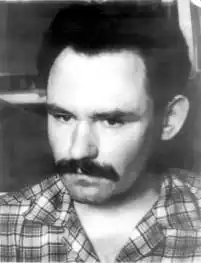
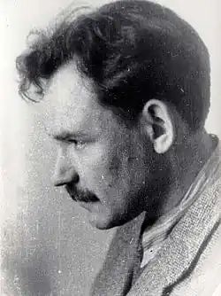
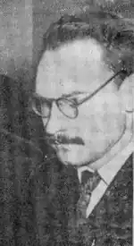

СВІТЛИЧНИЙ ІВАН ОЛЕКСІЙОВИЧ
1929 (20.09) — 1993 (?)
Життєвий і творчий шлях нашого письменника-земляка багато в чому схожий на долі тих "шістдесятників", які, зрозумівши кричущі протиріччя хрущовсько-брежнєвської епохи, не змогли прийняти подвійну мораль радянського суспільства. А "шістдесятниками" в історії нашої культури прийнято називати тих письменників і митців, творчість яких починалась у пору "хрущовської відлиги" на межі 50—60 років, які обрали шлях боротьби за свободу творчості і права людини. Досить влучно про це покоління сказав один з когорті; "шістдесятників", відомий сьогодні есеїст і культуролог Євген Сверстюк: "Стривожені війною, гартовані злиднями, оглушені тотальною ідеоілогією, Люди раптом прокинулись від падіння страшного ідола (Сталіна—В. О.) і кинулись до пробоїни в стіні, де він упав. Цілі ідеологічні загони було кинуто на заліплення пробоїн. Однак одиниці кинулись їх розширювати. З цього почалися щістдесятники (нині вже є охочі об'єднувати перших і других!) — ті, яким засвітилась істина і які вже не захотіли зректися чи відступитися від украденого світла". До цього покоління відносять поетів Василя Симоненка, Івана Драча, Ліну Костенко, Євгена Гуцала, наших земляків Василя Голобородька, Василя Стуса, а також митців Віктора Зарецького, Аллу Горську, Людмилу Семикіну, Галину Севрук, Панаса Заливаху, Веніаміна Кушніра та ін. Серед них був і Іван Світличний... Як більшість людей цього покоління, його не обминули тюрма та концентраційні табори. Неприйняття тодішньої хрущовсько-брежнівської дійсності, участь на хвилі політичної відлиги в акціях на захист української інтелігенції визначили його страдницьку долю... Народився І. Світличний в селі Половинкиному Старобільського .району Луганської області. Закінчив філологічний факультет Харківського університету. Його покликанням стали теоретичні студії в галузі літературознавства. І. Світличний був неординарною особистістю. Ф. Д. Пустова, викладач Донецького національного університету, яка. в той час була студенткою Харківського університету, згадує: "Всі ми ставились до Івана з глибокою симпатією та повагою, дехто називав його "свєтлой личностью". Це пов'язувалося не стільки з прізвищем, скільки з тим, що він, як правило, був усміхненим, привітним, випромінював добрюзичливість. Людей до себе Іван притягував не тільки ерудицією, а й кришталевою моральною чистотою, щедрістю. На перший погляд здавався м'якою, беззахисною людиною, але в полеміці на морально-етичні, світоглядні питання виявляв твердість". Після закінчення університету І. Світличний активно увійшов у критичний цех української літератури, ведучи полеміку з письменниками та читачами про літературу шістдесятих років, її моральні та естетичні проблеми. Хоча практично не можна було вийти в той час за межі жорстких приписів соцреалізму, критикові вдавалося підійти до самої грані дозволеного у коментуванні зашореної ідеологічними нормами української літератури. Це стосувалося творів провідних на той час письменників, твори яких сьогодні зняті з програмного вивчення в школі (О. Корнійчук, М. Стельмах, А.Головка, Ю. Яновський та ін.). Інколи критичні виступи І. Світличного зачіпали досить впливових авторів, які пізніше розквитались з порушником громадського спокою. Так, аналізуючи на сторінках журналу "Прапор" у 60-і роки наукові опуси провідних тоді шевченкознавців, Іван Світличний виявив талант не тільки рецензента, але й публіциста-сатирика. Від нього дісталося і такому впливовому ревнителю класових чеснот, як І. К. Білодід, Досліджуючи його монографію "Т. Г: Шевченко в історії української мови", критик писав: "І. К, Білодід теж буває не проти того, щоб унаочнити свою думку солідною цифрою. Виявляється, обґрунтувати ідею про Шевченкове "філософське осмислення світу, всесвіту, прогресу, руху", можна й статистично: адже "слово світ фіксується в словнику мови Шевченка 354 рази". Особливо ущипливо розвінчує Світличний стандартний заяложений вислів у працях цих вчених про те, що "вони не претендують" на великі відкриття, узагальнення, а є скромними дослідниками Шевченкового слова: "Ми не претендуємо", — голосно заявляють учені і скромно опускають очі додолу. "Ми не претендуємо — і ви не майте до нас претензій..". Ні, шановні, не треба ставати в позу нареченої і зніяковіло колупати піч. Ви справді не претендуєте ні на що, доки свої "безпретензійні" витвори читаєте перед обідом чи на сон грядущий своїм чадам і домочадцям. Але коли в красивій оправі, під маркою університетів і академій, солідним тиражем випускаєте їх у широкий світ, ви, шановні, претендуєте, хоч би якими клятвами клялися в своїй скромності й безпретензійності. Ви претендуєте на читацьку увагу, на вчені звання, на народні кошти. Ви претендуєте — кожен може судити вас відповідно до цих ваших претензій". Тож чи могло таке подобатись можновладцям від науки та й іншим ревнителям порядку у сталінському смислі слова? Звичайно, ні! Позиція молодого вченого і критика привертала увагу молоді. До нього горнулись В. Стус, В. Голобородько. Щирою була дружба між нашим земляком і Василем Симоненком. Саме завдяки І. Світличному були збережені для нащадків недруковані а Україні вірші В. Симоненка. Та важка репресивна атмосфера, яку не розвіяли (та й не збирались цього робити) партійні з'їзди, почала густішати над "шістдесятниками" й Іваном Світличним. Про це можна судити хоча б з іронічного, але страшного за своєю суттю листа, який В. Симоненко написав до Світличного у червні 1963 року: . "Дорогий Іване! Якби тебе зрідка не згадувала уважна "Літературна Україна", то можна було б подумати, що тебе вже вислали з Києва. Незрозумілим лишається і той обурливий факт, що естет-рецидивіст І.. Дзюба досі не виключений з Спілки або спеціальним рішенням не перейменований в Ів. Зуба. Це просто не вкладається у мій провінційно-лояльний мозок (поет тоді мешкав у Черкасах— В. О.), А як там Євг. Сверстюк: чи вже доскочив класового усвідомлення, чи досі хибно вважає, що Шевченко був українцем? До речі, недавно, був у Моринцях та Кирилівці. Обшарпані Моринці спішно припудрюють до 150-річчя Тараса, бо інакше туристам не буде що показувати. Оформляють держав ним (!) коштом центр села. Не вирішено тільки, кому біля клубу ставити монумент — незабутньому Потьомкіну чи Шевченкові. А люди кажуть приблизно таке: — Що воно за людина отой Тарас? Навіть мертвий добро нам робить. Усе — це між іншим. Загалом я живу тихо й одноманітно, як завжди. З "Літ України" видно, що пахне якимось "міроприємством по перевихованню" молодих критиків і демагогів, до яких належиш і ти..." І справді, довго чекати не прийшлося: керівні хмари почали невдовзі випускати блискавки по неслухняних головах української інтелігенції... Коротка політична і культурна відлига змінювалася на нові шалені репресії проти творчої інтелігенції. В одній із своїх праць Іван Дзюба писав про Світличного: "Держава воювала з купкою "формалістів" у мистецтві. Але насправді йшлося про боротьбу проти всякої вільної думки і незалежної духовної творчості як загрози пануванню монопольного партійного, а радше вождівського догмату. На Україні, як завжди, ця кампанія була підхоплена з безприкладною запопадливістю і набрала особливо дикого характеру: адже за вигаданим "формалізмом" "шістдесятників" побачили реальну перспективу національно-культурного відродження, а це вже — "націоналізм". Саме в цей час на Україні народився страхітливий афоризм: коли в Москві ріжуть нігті, то на Україні — пальці. Наставали часи, коли вже палке слово критика Світличного боялися друкувати. У цей час його звинувачують в тому, що він ..передав за кордон вірші В. Симоненка. Після чого перший арешт (1965 р.) та тимчасове помилування. 1972 року починаються нові нагінки проти української інтелігенції. Не минула ця доля і нашого земляка — сім років таборів суворого режиму та п'ять років заслання за антирадянську пропаганду і поширення самвидаву ,його вірші цього періоду написано на грані відчаю, внутрішніх докорів собі і всьому нашому суспільству за жертви беріївщини, голодомори, пасивність народу перед загрозою знищення самого імені українця. Роки, проведені у тюрмах та виселках, підірвали здоров'я поета. Недовго він прожив на свободі, не встиг надивитись на оновлювану незалежну Україну. У жовтні 1992 року Івана Світличного не стало, Оцінку життєвому і творчому шляху І. Світличного і спокуту перед ним українського суспільства висловив у прощальній промові відомий літературознавець, директор Інституту літератури Г. Сивокінь. Він сказав: "Генієм доброти ми називаємо Світличного чи не в один голос. Але не забуваймо, яким грізним, непримиренним виступав він — почитаймо його вірші — до тих, хто сховався, замовк, принишк, як тільки гримнуло з неба. Зневага, а не доброта та всепрощення стають його зброєю. Заповітом не тільки племінникові Яремі, а всім, хто вважає себе мужчиною, отже, людиною сміливою й чесною, — заповітом, що набирає нової сили в умовах нашої української сучасності, є Іванові афористичні слова: "Як не я, тоді хто? Не тепер, то коли?" Вони печуть вогнем, не дають спокою, нагадують про гріхи, тяжкі гріхи. Отож від себе кажу: "Прости, Іване!" Від інституції своєї грішної благаю: "Прости, Іване!" Від суспільності нашої нещасливої молю: "Прости, Іване!". Хай тобі, нескореному степовикові, ця київська столична і, на жаль, столика земля пухом..." Прочитавши цей скорбний текст про одного з поетів-звитяжців Україні і нашого земляка, ознайомтесь з його віршами, уміщеними на цій сторінці. Вони допоможуть вам осягнути поетову непересічну особистість, полюбити барви його гіркого, але правдивого слова.